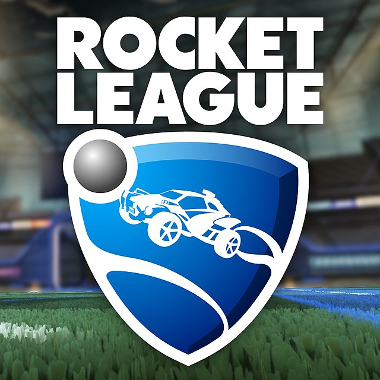

Rangos Competitivos:
Actualmente existen varios tipos de rango, desde el rango más bajo que es bronce hasta el más alto Leyenda Supersónica (SSL). Dependiendo el rango que tengas, te emparejará junto a gente de tu mismo nivel, también puede haber el caso de que te meta con gente superior, eso significa que estás a punto de subir de rango o en el caso de que te meta con gente de menor rango.
Modalidades multijugador:
Psyonix ha establecido servidores dedicados en Estados Unidos, Europa, Oceanía y América del Sur. El juego ofrece la posibilidad de disputar en ellos partidos en modo estándar o en ranked (estos últimos con excepción de la modalidad 4 vs 4).
Descripcion:
Rocket League es un videojuego que combina el fútbol con los vehículos. Fue desarrollado por Psyonix y lanzado el 7 de julio de 2015. Fue lanzado Free to play en septiembre de 2020. Se encuentra disponible en español, y tiene modos de juego cooperativo, de un jugador y en línea.Es la secuela de Supersonic Acrobatic Rocket-Powered Battle-Cars,juego lanzado para PlayStation 3 en 2008. Durante la fase de desarrollo, Rocket League llevaba como nombre tentativo Battle Cars 2.


Dinamica:
El juego se asemeja al fútbol, pero utilizando vehículos en lugar de jugadores y una pelota de gran tamaño y dos porterías de gran tamaño. En los partidos pueden participar desde 1 vs 1 hasta 3 vs 3 en modo competitivo, en modo informal se puede hasta 4 vs 4 jugadores distribuidos en dos equipos, naranja y azul cuando es 2 vs 2 equipo contra equipo. Cada vehículo puede utilizar propulsión extra, tanto para acelerar como para desplazarse por el aire, siendo esta una característica fundamental del juego.